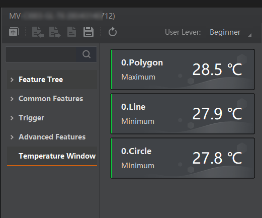

The Temperature Window allows you to view temperature values and variation curves of temperature screening regions.
When configuring the temperature screening parameters, you can choose whether to display on the Temperature Window the temperature values and curves of the temperature screening regions you have drawn. The value shows the real-time statistics of the corresponding region; the curve shows the temperature variation of the corresponding region over the last 12 hours.

Figure 1 Temperature WindowThe number of windows displayed on this tab depends on the display parameter configurations. Up to 4 temperature value windows and 1 temperature curve window are allowed to be displayed here.
Refer to Temperature Screening Configuration for details about how to draw regions for temperature screening and how to configure the relevant parameters.